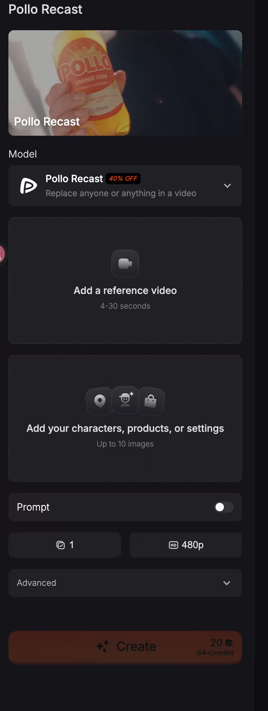
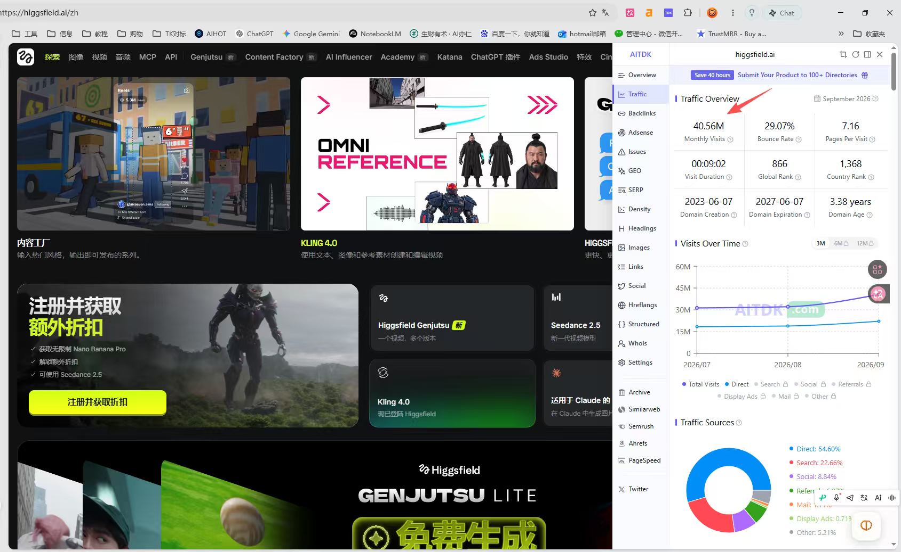

这场讨论的主线不是“Agent 没有价值”，而是“不要把 Agent 当成个人开发者默认的产品起点”。阿彪、SAI 和其他群友反复强调：普通用户需要在十秒内看懂网站解决什么问题；能力越宽，教育成本越高，越容易出现期待落差。对个人开发者而言，更现实的方向是先做一个边界清晰、输入输出明确、已经有人验证过 PMF 的小产品。
讨论形成的共识
| 问题 | 聊天中的主要观点 | 对个人开发者的含义 |
|---|
| Agent 适合谁 | Agent 能力宽、教育和研发成本高，阿彪认为它更像融资型团队的游戏 | 没有大模型、资金和服务能力的个人开发者，不应一上来就做全能 Agent |
| 无限画布适合谁 | 面向专业用户，用户少而挑剔，海外 PMF 难做 | 除非你对专业工作流非常熟悉，否则优先做普通人能理解的产品 |
| 什么更容易成交 | SAI 的实际体验是，用户不会用 Agent；阿彪直接说“要赚钱就得做表单” | 把能力和操作限制在清晰流程里，让用户一眼知道下一步做什么 |
| 产品从哪里来 | 优先找已经验证过 PMF 的产品，再判断需求、体验和差异 | 不要为了创新而做出四不像；也不要只会复制，必须理解 PMF |
| UI 应该怎样 | 删掉或隐藏不需要的内容，少写解释文字，简单界面反而可能提高留存和转化 | 先让核心动作可见，再考虑增加高级功能 |
需要保留一个边界：这场聊天是创业者的经验讨论，不是对 Agent 市场的完整研究。“Agent 和赚钱互斥”“个人开发者不要做 Agent”属于个人判断，并不能覆盖所有团队和场景。融资充足、拥有专有数据或能承担长期教育成本的团队，仍然可能做出有价值的 Agent。
为什么 Agent 容易变成费力不讨好
Thor 最早提出担心：用户可能压根用不明白。SAI 的经历把这个担心说得更具体：他给 Agent 产品投入了一万多元推广，用户进来仍然不知道怎么使用；Agent 一旦被当成表单用，反而不如传统表单稳定，因为 LLM 分析更耗时，也更容易出错。
- Agent 听上去什么都能做，用户会默认它应该理解所有需求；只要有一项没满足，就会产生明显失望。
- 要求用户主动、完整地描述需求，但能说清楚自己的人本来就是少数。
- 用户满意时未必给好评，一旦没有满足基本预期却很容易抱怨。
- 研发、人才、模型 token 和 onboarding 都需要成本，个人开发者的 ROI 很难打平。
这些是聊天中的直接经验，不是对所有 Agent 产品的否定。真正可迁移的结论是：能力越宽，产品越需要解释；而解释成本最终会体现在用户流失和交付成本上。
这里的“表单产品”是什么
聊天里的“表单”不必理解成只能填几个输入框。更实用的定义是：用户带着明确任务进入，按有限步骤输入，马上得到可理解的结果；产品能力边界固定，用户不需要先学习一个全新的操作范式。

这张 Pollo 操作截图就是聊天中所说的表单实例。用户能清楚看到需要上传参考视频、角色或商品图片、填写提示词并选择分辨率和数量；任务边界虽然窄，但输入、输出和下一步动作都很明确。
- 先选一个普通用户已经存在的具体任务，而不是让用户自己发明使用方式。
- 把核心输入、处理过程、输出结果和价格边界固定下来。
- 让用户在首屏就知道要做什么，减少介绍性文字和不必要的功能入口。
- 先验证有没有人愿意反复使用和付费，再考虑增加 Agent、无限画布或自动化能力。
SAI 提到，锁定能力反而能降低用户预期，也降低失望；蓝星空也观察到，UI 简单一点，留存率和转化率反而更高。这里的共同点是减少认知负担，而不是把产品做得粗糙。
Pollo.ai 的路线：先窄后宽，再随用户行为调整
阿彪在群里澄清自己的产品经历，也给“先做小产品”提供了一个真实案例。Pollo.ai 并不是一开始就做成大而全的平台，而是经历了连续调整。
- 最开始只是一个接 API 的套壳产品。
- 后来想做视频领域的 POE。
- 看到莱昂纳多 AI 被 Canva 收购后，想做出视频领域的莱昂纳多 AI。
- 继续观察用户后，发现大部分用户真正需要的是图生视频，而不是文生视频。
- 于是往上游做了图片能力，之后又经历一系列转型和调整。
这条路线说明，产品方向不是一次想清楚的；它来自对已有 PMF、用户行为和自身能力的连续判断。重点不是复制 Pollo.ai 的最终形态，而是学习它从具象需求开始、根据真实使用反馈调整的做法。
单点功能必须是新鲜且有 PMF 的核心能力
第二段讨论把“先从单点出发”说得更具体：单点不能随便选一个小功能，而应当是该产品真正核心、已经被验证过 PMF、且仍然比较新的能力。阿彪以 AI 视频生成为例，认为现在再把这个已经普遍化的旧功能当作唯一切入点，时机已经过去。
- 先找到用户愿意反复完成的核心任务，而不是为了显得产品完整而堆附属功能。
- 确认这个单点已经有真实使用和付费信号，不能只凭创始人自己的判断。
- 优先选择仍在形成、竞争尚未固化的新能力；成熟且拥挤的旧能力很难靠同一入口突围。
- 先用单点获得第一批用户，再根据用户画像与实际需求扩展下一步能力。
SAI 把这种方法概括为“从一个点先收割一波回访用户，再根据用户画像和需求延生功能”。这不是要求永远只做一个功能，而是避免产品还没有核心用户时，就提前进入大而全状态。
功能多不等于产品强，反而会遮住核心任务
村长提出一个很具体的体验问题：为什么很多大型 AI 网站连搜索框都没有，用户只能在一堆菜单里寻找功能？阿彪承认 Pollo.ai 的功能太多，很多用户找不到，搜索功能确实需要做，只是仍在排期。这说明功能数量增长后，产品团队必须重新设计发现路径。
Thor 随后贴出的 Higgsfield 手机 H5 截图，说明复杂 AI 产品已经可以做成接近 App 的移动体验；但入口越多，新用户越需要搜索、推荐和清晰的首屏路径来判断自己该做什么。
阿彪同时用“草台班子”和连续的“排期”解释复杂产品并不总是经过完整规划。这里真正可迁移的不是自嘲，而是一个产品规律：当功能多到用户无法快速判断下一步时，增加按钮和说明文字通常不能解决问题，搜索、默认路径和信息层级才是基础设施。
产品与营销不能分开管理
第二段最关键的延伸，是讨论从“做什么产品”转向“产品如何被用户发现”。SAI 认为产品体验只要没有巨大差距，先抢到用户就很重要；阿彪同意产品力往往拉不开本质差距，但进一步指出，单纯迷信流量同样是误区。

聊天中贴出的 AITDK 截图显示，higgsfield.ai 在 2026年9月约有 4,056 万月访问量，直接访问约占 54.6%、搜索约占 22.66%、社交约占 8.84%。这是第三方估算，不能代替官方数据，但它支持了群聊里的判断：产品体验之外，渠道、品牌和用户获取同样会形成明显差距。
| 层面 | 聊天中的判断 | 对个人开发者的含义 |
|---|
| 产品 | 任务边界、表单体验和基础质量决定用户能否完成目标 | 产品是入场券，但仅靠微小体验差距很难形成壁垒 |
| 营销 | 用户获取、首印象和渠道决定谁能先形成使用习惯 | 不能把营销完全交给另一条线，也不存在一套全球万能打法 |
| GTM | 产品与营销一起定义目标人群、价值表达和发布路径 | 先确定人群，再决定 SEO、内容、红人或社群渠道 |
| 组织 | 产品与营销分开管理容易低效，真正有效的是 go to market 一体化 | 独立开发者必须同时理解产品与分发，而不是只做功能 |
| 产品内营销 | 把分享、传播或结果展示做进产品，用户使用时顺带推广 | 增长动作要与核心体验一致，不能先堆无关裂变机制 |
阿彪特别强调，不同产品形态和所定义的人群会决定不同的营销方式。营销不是通用工具，也不能脱离产品单独优化。这个判断也解释了为什么个人开发者不能简单模仿大公司的投放打法。
独立开发者的渠道顺序：SEO 打底，GEO 做实验
从独立开发者视角看，SAI 认为红人营销成本过高：一个十分钟视频可能报价 3,000 至 5,000 美元。蓝星空补充，可以自己养号、写文章推广；村长则认为 GEO 更省钱，而且新词被 ChatGPT 推荐时似乎不再依赖传统权重和外链。
- 先建立可持续的 SEO 与内容基础，用自有页面承接明确需求。
- 把 GEO 作为获取 ChatGPT 等生成式入口的实验渠道，单独记录流量、点击和转化。
- 同步经营自有账号与文章分发，避免把全部预算押在高价红人合作。
- 红人或在渠道投入应当与客单价、复购和可验证转化匹配，而不是先花钱买曝光。
- 每一轮都分别评估产品体验、来源流量和真实成交，避免把平台红利误判成产品力。
聊天最后没有对 SEO 与 GEO 的关系形成统一结论。SAI 认为 SEO 是 GEO 的基础；村长则认为 ChatGPT 的新词推荐已经出现脱离传统 SEO 的苗头。更稳妥的做法不是二选一，而是把两者当作可分别测量、相互补充的获客实验。
产品如何简化
- 先删掉不需要的功能和说明，把用户当下必须完成的动作留在首屏。
- 把“我们很强”式的介绍改成“你现在能完成什么”的结果描述。
- 用固定输入、固定输出和明确边界替代开放式自然语言承诺。
- 如果用户仍然不知道怎么用，优先检查流程和界面，而不是继续加教程文字。
- 允许后续扩展，但不要在产品还没有基本转化时，先堆上 Agent、无限画布和多模型路由。
村长开头说网页的介绍性文字稍微有点多，这句反馈其实是整场讨论的缩影：用户不是来读产品宣言的，而是来判断自己能否完成任务的。
仍有分歧和空白
- “Agent 是融资型选手的游戏”是偏激的经验判断，不能替代对团队资源、用户场景和竞争格局的具体分析。
- “找一个已经验证 PMF 的产品抄一个”不能被理解成复制品牌、代码或受保护内容；合理做法是理解需求、验证差异并合法竞争。
- 国内备案站做订阅或单次付费有没有具体坑，慎独提问后没有得到完整答案。
- 什么程度算“简单”、如何在简单和功能完整之间取舍，聊天只给出了方向，没有统一量化标准。
- 这次聊天没有提供 Pollo.ai 的流量、收入或转化数据，不能单独证明某一种产品路线必然成功。
- “Pollo.ai 是中国出海 AI 视频应用体量第一”和与 Higgsfield 的强弱比较均为阿彪口述，聊天没有附市场份额或收入数据。
- 红人每分钟报价、一万多元推广投入和 SEO/GEO 效果都来自个人经验，缺少统一样本与对照组。
- “GEO 可以脱离 SEO”只是村长的趋势判断；SAI 明确认为 SEO 仍是 GEO 的基础，讨论没有形成定论。
完整原始记录：两段连续对话
第一段：Agent 与小产品（2026年10月22日 23:18-23:49）
第一段覆盖 2026年10月22日 23:18 至 23:49，共保留 72 条消息、12 位参与者。原始记录有 73 条，其中 1 条为空消息；该段聊天中的 1 张图片未随压缩包提供，原文保留图片占位。
聊天记录（72 条）
参与者 12 人：村长、Thor、蓝星空、阿彪、SAI、尘落、向雄(川福)、朱峰、慎独、半缘君、哥飞、山沟沟的孩子 · 时间范围 2026年10月22日 23:18 至 2026年10月22日 23:49 · 原始 73 条，保留 72 条，删除 1 条空消息
村村长2026年10月22日 23:18
既然都public了，我也瞎说句吧，网页的介绍性文字稍微有点多 要是能减少描述文字会更好一点
蓝蓝星空2026年10月22日 23:19
这个其实早就有人在做了。我的页面上个月就写好了，效果感觉不是太好（其实也可以了），一直没上线。
阿阿彪2026年10月22日 23:24
做海外市场的无限画布是个很难有 PMF 的事情，它主要面对的是很专业的用户，这类用户又少又挑，很难服务好。
其实我们更应该多做一些要求不高的非专业类用户的产品，且这个产品最好是有别人已经验证了 PMF 的。
SSAI2026年10月22日 23:26
每个站重新做seo，不是长期的，基本靠广告，支付也要重新审核
尘尘落2026年10月22日 23:27
[图片] 微信图片_202610222327_1.jpg
SSAI2026年10月22日 23:27
agent能力太宽了，用户进来10秒看不明白你这个网站到底解决哪个问题就走了
TThor2026年10月22日 23:28
我觉得目前的 Agent 都靠用户主动输入，但是主动输入 能说清楚自己需求的人是少数人。
SSAI2026年10月22日 23:28
agent还是要靠大厂做，因为个人做的agent能力有限，大家以为agent能做所有事情，但你的agent如果做不到，那就是费力不讨好的事情。
SSAI2026年10月22日 23:30
我认为agent还不如传统的生成表单，只少用户知道自己在做什么，以及明白你的网站能做什么
SSAI2026年10月22日 23:30
agent听上去就是一个什么都能干的，只要有一点没满足用户，你就是出token不讨好
蓝蓝星空2026年10月22日 23:31
你的回答解决了我最近一个月以来的困惑。
我一直看不太明白 agent，我感觉我也很难教会用户去使用 agent，所以我一直没上线这个。
但是周围一直又有很多朋友在说 agent 有多好。
SSAI2026年10月22日 23:31
是的，把能力锁定在表单里，用户能一眼看到你的网站锁定了哪些能力，期待没那么大，失望也就没那么大
TThor2026年10月22日 23:32
我想想用户要 onboarding 多久才到付费环节就头大了
蓝蓝星空2026年10月22日 23:33
目前为止，我这边还没有一个用户反馈说要加 Agent 和 无限画布的功能。
慎慎独2026年10月22日 23:33
话说大家有在国内上过站吗 订阅或者单次付费有路子吗
半半缘君2026年10月22日 23:34
我还以为 Agent 化是个趋势呢，看来至少对个人开发者来说是个坑。个人开发者还是应该做功能简单，足够垂直的领域
阿阿彪2026年10月22日 23:34
无限画布属于专业级工具，相当于 Photoshop、 Adobe Premiere 这种专业级的生产力工具，普通人是不会去用的
阿阿彪2026年10月22日 23:35
技术成本也不低呀，招聘优秀的 Agent 的人才也很难，成本也很高啊，模型 token 消耗成本也不低呀，要赚钱，ROI 打不平的，只能融资型选手来玩
阿阿彪2026年10月22日 23:36
现在市面上的 Agent 的人才，就相当于当年 App Store 刚出来的那些做 iOS 开发的人才一样，没什么经验，但是又贵又抢手，经常需要跟大厂的人去抢人才
SSAI2026年10月22日 23:37
我在我的agent产品上推广花了1w多，用户进来不会用
SSAI2026年10月22日 23:37
还是当表单用，但是agent当表单用的话，反而没有表单好用。
阿阿彪2026年10月22日 23:38
跨境电商领域有句话叫做选品定生死。其实大家选择做什么样的产品，用接地气一点的话说，就是选品。在很多高大上的术语里面，就叫做战略方向。
其实如果纯粹只是想赚点钱，做个小生意，最简单的方式就是找一个已经验证 PMF 的产品，抄一个。
但是很多人关键他可能抄都不会抄，你得先判断人家有没有 PMF，这个很关键。
或者呢，就是太有洁癖也不行。自己想各种创新，结果做出各种四不像
SSAI2026年10月22日 23:39
我有点洁癖，之前是代码洁癖，现在纯vibecoding，我不看代码就解决了
阿阿彪2026年10月22日 23:39
这个很好，说明你有品味。它也会提高用户信任度和购买转化率
哥哥飞2026年10月22日 23:40
@阿彪 彪哥是 Pollo.ai 创始人，今晚给大家上的是顶级认知课
蓝蓝星空2026年10月22日 23:40
我发现 UI 做的简单一点，用户留存率和转化率反而更高一些。
SSAI2026年10月22日 23:42
你做的成功啊，在ai图视频赛道，我觉得除了higg就是你了
TThor2026年10月22日 23:44
具体啥样算简单呢，我最近也困在这里，ai 写的界面让他引导多点，他就一堆文字，我自己都不愿意看
SSAI2026年10月22日 23:45
我踩的坑，就是想告诉大家，千万千万不要一上来就干成彪哥那样大而全，得从一个点干
SSAI2026年10月22日 23:45
彪哥的路子我最开始没关注，遗憾了。但是也应该是从某个点开始吧
阿阿彪2026年10月22日 23:48
openart， artlist ， magnific 他们量也很大的
阿阿彪2026年10月22日 23:49
最开始纯粹接个 API 套壳，后来想做视频领域的 POE，后面看到了一个产品叫莱昂纳多 AI，被 Canva 收购了，我们就想做视频领域的莱昂纳多 AI，后来发现大部分用户是图生视频，而不是文生视频，所以往上游又做了图片，等等后续一系列的转型和调整
第二段：表单、产品与营销（2026年10月22日 23:50 至 10月23日 00:11）
第二段紧接上一段，在 23:50 开始并跨过午夜，共 60 条消息、8 位参与者。原文未删除消息；该段聊天的 3 张图片已由补充包提供并插入正文对应段落，附录保留原始图片占位。
聊天记录（60 条）
参与者 8 人：Thor、阿彪、山沟沟的孩子、SAI、村长、小钱、蓝星空、哥飞 · 时间范围 2026年10月22日 23:50 至 2026年10月23日 0:11 · 原始 60 条，保留 60 条
TThor2026年10月22日 23:50
[图片] 微信图片_202610222350_1.jpg
阿阿彪2026年10月22日 23:51
大概意思就是表单针对普通用户更友好，他非常清晰的知道要填什么东西，能得到什么。
他的缺点是自由度没那么高，但是对普通用户他也不需要那么高的自由度。
那我们赚钱更多的只能赚普通用户的钱。如果要赚比较专业的人的钱，那你可能就要用 Agent。那如果你用 Agent 可能你又做不了那么好。
阿阿彪2026年10月22日 23:52
另外大家可以看一下 Higgsfield 的 H5，也可以看看我们的 H5，我们的也还做的没那么好，还在优化。
大家还是要提高一下对它的重视度
TThor2026年10月22日 23:53
[图片] 微信图片_202610222353_2.jpg
SSAI2026年10月22日 23:53
所以你是从这里开始的，我不知道我的想法是不是正确，就是从一个点先收割一波回访用户，然后根据这帮用户的画像和需求，再延生功能
SSAI2026年10月22日 23:54
我看你你的网站功能已经很全了， 但我觉得不应该一开始就做大而全，而是单点出发
阿阿彪2026年10月22日 23:54
产品是逐步迭代的，随着自己对产品的理解，用户的理解，认知的升级，不断迭代的
村村长2026年10月22日 23:55
我以前是做国内互联网产品的，有带着老产品的思维开发模式 我刚开始接触出海AI站的时候我就很奇怪为什么很多AI大站都商量好了一样都不放一个搜索框呢。我经常要找个东西 看到一大堆的菜单眼睛都花了
阿阿彪2026年10月22日 23:55
我们确实功能太多，很多功能用户都找不到，确实要做搜索功能。只是这个在排期
阿阿彪2026年10月22日 23:57
是的。 最好单点功能是某个产品的核心功能，是有 PMF 的。而且要尽量是比较新的，不能是那种很老的功能。比如说现在再把 AI 视频生成这个单点功能作为这个点去切入，就已经过时了
村村长2026年10月22日 23:57
我还以为是有什么特殊的考量 pollo感觉在生视频领域已经是神一般的存在了
SSAI2026年10月22日 23:58
我不是想故意吹捧，但我之前看项目的时候，第一个看higg，第二个就是看pollo😂
阿阿彪2026年10月22日 23:59
中国出海的 AI 视频应用型公司，我们确实是体量最大的，No.1
SSAI2026年10月22日 23:59
给我的感觉是，网站一旦功能多了，就会混乱，higg就是，我作为一个新用户，进去一脸迷茫
阿阿彪2026年10月22日 23:59
只是跟海外的 Higgsfield 比，他们就太强了，遥遥领先于我们
阿阿彪2026年10月22日 23:59
是的，他们比较混乱。他们有很多个产品团队，各自为阵，各搞各的，各做一套
SSAI2026年10月23日 0:00
我说实话pollo好多了，higg我进去真不知道要干嘛
小小钱2026年10月23日 0:01
[图片] 微信图片_202610230001_3.jpg
阿阿彪2026年10月23日 0:01
我也认可这个，其实我们在产品上没有本质差别，而且我并不觉得我们体验比他差
SSAI2026年10月23日 0:02
我的看法哈，我觉得体验一点点差距一点都不重要。😂，除非有很大差距。
阿阿彪2026年10月23日 0:02
但是他们的营销实在是太强了，他们也太有钱了，整个创作者圈几乎都快被他包圆了
SSAI2026年10月23日 0:04
polox我觉得我做的挺好的，但对于用户来说，是个垃圾玩意
阿阿彪2026年10月23日 0:04
单纯搞流量也是一个很多人的误区。其实最会搞流量的是产品和营销一起结合，这个才是最重要的。
很多公司产品是一个人管，营销是一个人管。这种大概率那个营销是不太懂产品，也不太能够指挥产品去做事情，也会需要各种排期，就会非常低效。
真正厉害的是产品和营销一起管，一起 go to market
阿阿彪2026年10月23日 0:05
大家需要把营销做到产品里面去，用产品的人顺带就帮你推广了，最好是这样。
当然我也是理论派，我们也在做这样的尝试，但是我也不好说出来，不过大家可以往这个方向思考
哥哥飞2026年10月23日 0:06
这就是我们社群要培养的人才，产品、营销都能干，且要干得好
阿阿彪2026年10月23日 0:06
而且不同的产品形态、范式，你所定义的人群，会决定着你的营销方式的不同。
营销不是个万金油，并不是什么产品都是用一套方法打全球
阿阿彪2026年10月23日 0:06
是的，大家多少是个 builder，产品经理，再学学营销，一起结合，就会成为这样的人才
SSAI2026年10月23日 0:07
就是从独立开发者视角出发的话，做红人营销我觉得不太现实，我有和一些youtuber去聊，10分钟的视频要3000-5000刀。我们还是从seo出发更划算
村村长2026年10月23日 0:11
现在的新词被chatgpt推荐的苗头 我感觉geo有点可以脱离seo的意思了 也不看权重 也不看外链